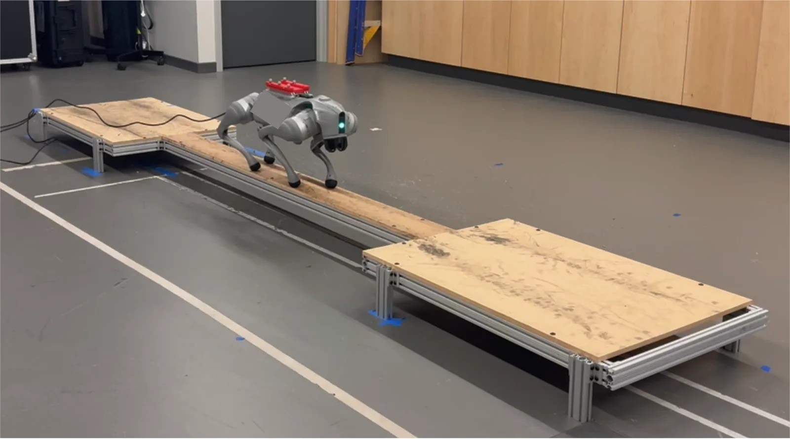
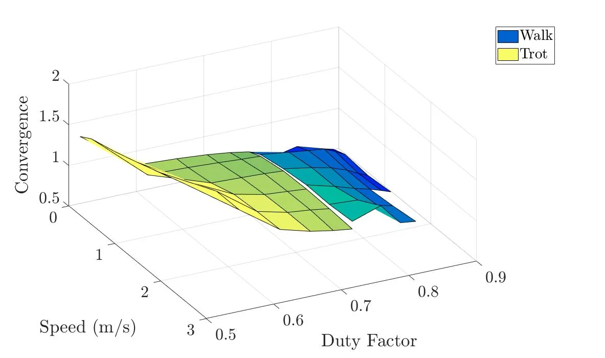
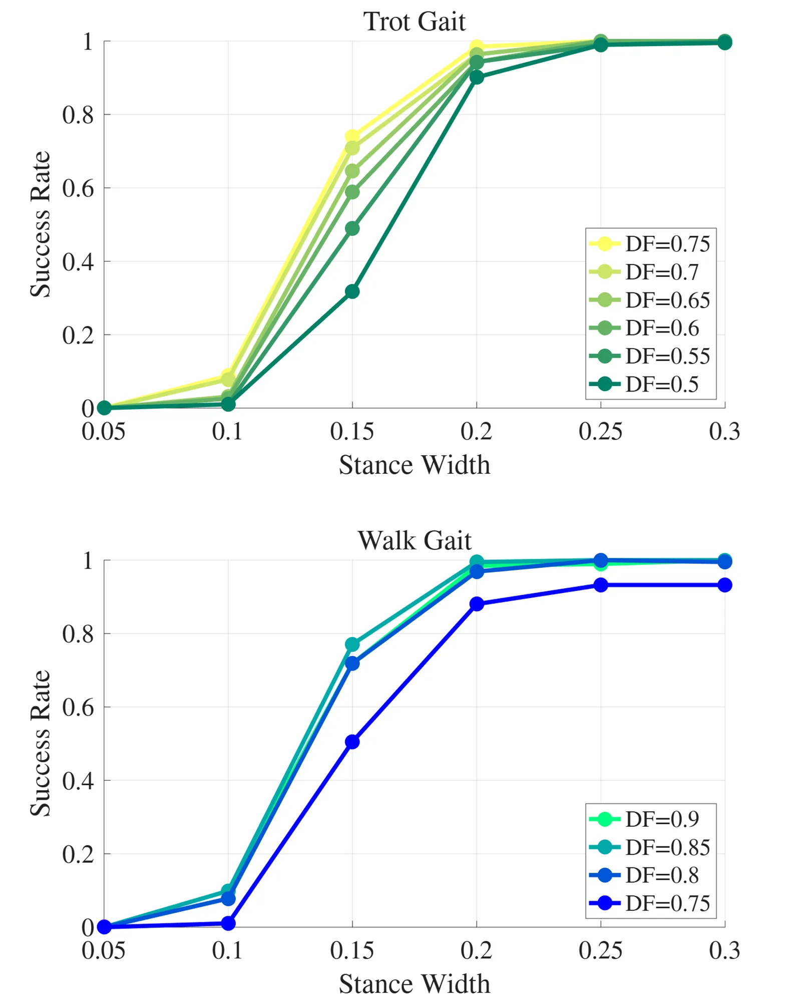
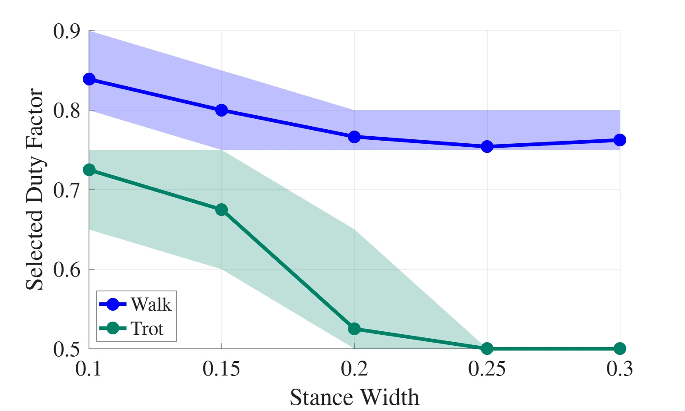

O problema: tipo de marcha não conta a história toda
Quando você pensa em como um cachorro ou um robô quadrúpede se move, provavelmente imagina marchas distintas: caminhada, trote, galope. Essas classificações são úteis e intuitivas, mas escondem um problema. Dentro de uma mesma marcha — digamos, trote — você pode variar velocidade, largura da base de apoio e quanto tempo cada pata fica no chão. Esses parâmetros contínuos afetam drasticamente o desempenho, mas costumam ser tratados como detalhes secundários.
O paper investiga se o tipo de marcha é realmente o melhor preditor de robustez em robôs quadrúpedes, ou se algum parâmetro contínuo explica melhor o comportamento. A resposta é surpreendente: o duty factor — a fração do ciclo de marcha em que cada pata permanece em contato com o solo — prevê robustez de forma mais consistente do que a classificação nominal em caminhada ou trote.
Os autores testam essa hipótese em três cenários diferentes: otimização de trajetória com controle LQR, aprendizado por reforço para navegação em terreno estreito, e controle preditivo centroidal validado em hardware. A consistência dos resultados através de arquiteturas de controle tão diferentes é o ponto forte do trabalho.
O que é duty factor e por que importa
Duty factor é a fração de um ciclo completo de marcha durante a qual uma pata específica está em contato com o chão. Se o duty factor é 0.5, a pata passa metade do tempo no solo e metade no ar. Se é 0.75, ela fica 75% do tempo apoiada. Marchas tradicionais são frequentemente associadas a faixas de duty factor: caminhada geralmente tem duty factor acima de 0.5, enquanto trote costuma ficar em torno de 0.5.
Mas essa associação não é rígida. Você pode executar um trote com duty factor de 0.6 ou 0.7, e pode fazer uma caminhada com duty factor de 0.55. O que o paper mostra é que, quando você controla para duty factor, as diferenças entre caminhada e trote praticamente desaparecem em termos de robustez. A marcha nominal vira uma etiqueta, e o duty factor vira o parâmetro que realmente governa o comportamento.
A intuição física é direta: quanto mais tempo as patas ficam no chão, mais oportunidades o robô tem de aplicar forças corretivas quando algo dá errado. Com duty factor alto, há sempre mais patas em contato, distribuindo melhor as forças de reação do solo e permitindo que o controlador responda a perturbações de forma mais eficaz.

Investigação 1: otimização de trajetória e análise de convergência
A primeira investigação usa otimização de trajetória de corpo completo com feedback LQR. Os autores implementaram um framework customizado de direct collocation usando a biblioteca Pinocchio para computar dinâmica contínua e híbrida. O objetivo da otimização inclui custos quadráticos nas entradas de controle, além de termos de regularização para altura do corpo e velocidades das juntas.
O truque aqui é que o tempo de swing das pernas é fixado, e combinado com o duty factor especificado, isso determina o período da marcha. Esse período varia entre tipos de marcha e duty factors, mas facilita a convergência do algoritmo. O modelo usado foi o Ghost Robotics Spirit 40.
Para cada trajetória otimizada, os autores geram um controlador LQR com matrizes de peso fixas. Esse controlador estabiliza a trajetória nominal e permite avaliar convergência local de erro sob dinâmica de malha fechada. A métrica de convergência χ é computada usando análise de sensibilidade baseada em saltation, uma técnica que lida com as descontinuidades inerentes a sistemas híbridos com contatos intermitentes.
A matriz de escala de estado S é definida com magnitudes características fisicamente significativas: 0.05 m para posição do corpo, 0.1 rad para orientação do corpo, 0.2 rad para posição das juntas, e assim por diante. Embora a escolha de S afete o valor absoluto de χ, os autores verificaram que as tendências observadas se mantêm para escolhas razoáveis dessa matriz.

O que a otimização revela
Os autores variaram sistematicamente tipo de marcha (caminhada vs. trote), duty factor, velocidade e largura da base de apoio, e avaliaram os efeitos na métrica de convergência local. Usando um modelo de regressão linear, descobriram que duty factor é o preditor dominante de convergência de erro, explicando a maior parte da variância nos dados.
Velocidade e largura da base também têm efeitos, mas menores. O tipo nominal de marcha, por si só, não adiciona poder explicativo significativo uma vez que duty factor é contabilizado. Isso significa que uma caminhada com duty factor 0.6 e um trote com duty factor 0.6 têm robustez local semelhante, mesmo que suas sequências de contato sejam diferentes.
Esse resultado desafia a visão tradicional de que marchas são categorias fundamentalmente distintas. Em vez disso, sugere que marchas são regiões de um espaço contínuo de parâmetros, e que duty factor é a coordenada mais importante nesse espaço quando o objetivo é robustez.
Investigação 2: aprendizado por reforço e seleção de duty factor
A segunda investigação explora se as relações entre parâmetros de marcha e desempenho se estendem a um controlador aprendido, e se duty factor pode servir como parâmetro de baixa dimensão para adaptar locomoção em terreno estreito. O framework consiste em um controlador de locomoção condicionado por marcha e um seletor de duty factor.
O controlador foi treinado para o robô Unitree Go2 usando Proximal Policy Optimization (PPO) no simulador Isaac Lab. Na verdade, são duas redes separadas — uma para trote, outra para caminhada — com arquitetura comum, mesma interface de observação e ação, e mesma formulação de recompensa. A identidade da marcha determina qual política é usada, enquanto os demais parâmetros (velocidade, duty factor, largura da base, período da marcha) condicionam seu comportamento.
A ação da rede é um vetor de posições de junta, e as observações incluem estado do robô e fases de marcha por pata. O comando especifica velocidade para frente, duty factor, largura da base, período da marcha e identidade da marcha. Essa estrutura permite que a rede aprenda a executar uma marcha específica com parâmetros variáveis.
O seletor de duty factor é uma rede separada, também treinada com PPO, que aprende a escolher duty factor com base no sucesso medido sob perturbações externas. A ideia é testar se uma rede consegue descobrir sozinha que duty factors mais altos são melhores em terreno estreito.

Resultados do aprendizado: duty factor alto vence
Os autores testaram o controlador aprendido em terreno estreito, variando duty factor e medindo taxa de sucesso. Tanto para trote quanto para caminhada, a taxa de sucesso aumenta com duty factor mais alto. Em terrenos muito estreitos, duty factors baixos levam a quedas frequentes, enquanto duty factors altos permitem travessia consistente.
O seletor de duty factor aprendeu a tendência correta: conforme a largura da base diminui (terreno mais estreito), a rede escolhe duty factors progressivamente mais altos. Isso sugere que duty factor pode de fato servir como parâmetro de baixa dimensão para adaptação online de locomoção, sem precisar retreinar toda a política.
Essa abordagem modular — separar a execução da marcha da seleção de parâmetros — é interessante do ponto de vista de engenharia. Em vez de treinar uma política monolítica que precisa aprender tudo do zero, você treina um controlador base robusto e uma camada de seleção de parâmetros que pode ser ajustada para diferentes ambientes.

Investigação 3: validação em hardware com MPC centroidal
A terceira investigação usa controle preditivo de modelo (MPC) centroidal e valida os resultados em hardware. MPC centroidal é uma técnica popular em robótica de pernas que simplifica a dinâmica do robô para um modelo de corpo único com forças de contato concentradas nos pés. Isso torna o problema de otimização tratável em tempo real.
Os autores implementaram um MPC centroidal e testaram diferentes duty factors em uma viga estreita com o robô físico. As tendências observadas nas investigações anteriores persistem: duty factors mais altos levam a travessia mais robusta. A figura 1 mostra o robô atravessando a viga com sucesso — a primeira demonstração documentada de um quadrúpede atravessando uma viga sem mecanismos auxiliares como rodas de reação.
Essa validação em hardware é crucial porque fecha o ciclo entre teoria, simulação e realidade. É fácil encontrar padrões em simulação que não se sustentam no mundo real, mas aqui a história é consistente através de três arquiteturas de controle muito diferentes: otimização offline com LQR, aprendizado por reforço, e MPC em tempo real.
O que o paper não mostra
O trabalho tem limitações claras. Primeiro, os autores focam principalmente em caminhada e trote. Marchas como galope, bound e pace não são investigadas sistematicamente. Não está claro se as conclusões se estendem a essas marchas mais dinâmicas, onde o duty factor pode cair abaixo de 0.5 e fases aéreas se tornam significativas.
Segundo, o foco é robustez local e convergência de erro, não eficiência energética. É bem estabelecido na literatura que diferentes marchas são mais eficientes em diferentes velocidades, e o paper não contradiz isso. Duty factors altos podem ser mais robustos, mas provavelmente custam mais energia. O trade-off entre robustez e eficiência não é explorado.
Terceiro, os experimentos em hardware são limitados a terreno estreito. Não há testes em terreno irregular, escadas, ou outros ambientes desafiadores. A generalização para outros tipos de perturbação e incerteza fica em aberto.
Quarto, a análise de sensibilidade baseada em saltation captura convergência local, não estabilidade global. Um sistema pode ser localmente estável mas ter bacia de atração pequena, ou vice-versa. O paper não aborda estabilidade global ou robustez a perturbações grandes.
Por que isso importa
A contribuição principal não é uma nova técnica de controle, mas uma mudança de perspectiva. Em vez de tratar tipo de marcha como escolha discreta fundamental, o paper sugere que parâmetros contínuos como duty factor são mais informativos. Isso tem implicações práticas para design de controladores.
Se você está projetando um sistema de locomoção, em vez de implementar caminhada, trote e galope como modos separados, você pode pensar em um espaço contínuo parametrizado por duty factor, velocidade e largura da base. A marcha nominal vira uma consequência desses parâmetros, não um input primário.
Isso também abre caminho para adaptação online. Se duty factor é um bom preditor de robustez e é um parâmetro de baixa dimensão, você pode ajustá-lo em tempo real com base em estimativas de incerteza ou dificuldade do terreno. A investigação 2 mostra que isso é viável com aprendizado por reforço, mas outras abordagens também são possíveis.
Finalmente, o trabalho contribui para a compreensão fundamental de locomoção. A classificação de marchas vem da biologia, onde animais exibem transições discretas entre padrões de movimento. Mas em robôs, onde você tem controle fino sobre todos os parâmetros, pode ser mais útil pensar em locomoção como um continuum. O paper fornece evidência quantitativa para essa visão.
O que vem a seguir
Os autores sugerem várias direções futuras. Primeiro, investigar se a relação se estende a outros parâmetros de marcha e regimes de locomoção, incluindo marchas mais dinâmicas e terrenos mais variados. Segundo, explorar se duty factor pode ser adaptado automaticamente online para balancear objetivos concorrentes como robustez e eficiência energética.
Outra direção é entender melhor os mecanismos causais. Por que exatamente duty factor alto melhora robustez? É porque há sempre mais patas no chão? É porque as forças de reação são melhor distribuídas? É porque o controlador tem mais tempo para reagir? Análises mais detalhadas da dinâmica de malha fechada podem responder essas questões.
Do ponto de vista de aprendizado de máquina, seria interessante ver se redes podem aprender a modular duty factor de forma mais sofisticada, talvez variando-o ao longo do ciclo de marcha ou entre patas diferentes. A investigação 2 usa duty factor uniforme para todas as patas, mas há espaço para exploração.
Finalmente, validação em ambientes reais mais diversos é essencial. Terreno estreito é um caso de uso importante, mas robôs quadrúpedes enfrentam muitos outros desafios: escadas, terreno irregular, superfícies escorregadias, cargas dinâmicas. Testar se duty factor continua sendo um bom preditor nesses contextos fortaleceria as conclusões.
O que fica
- Duty factor — a fração do ciclo em que cada pata fica no chão — prevê robustez de locomoção melhor do que tipo de marcha (caminhada vs. trote).
- Resultado se mantém em três arquiteturas de controle: otimização de trajetória com LQR, aprendizado por reforço e MPC centroidal validado em hardware.
- Duty factors mais altos aumentam robustez em terreno estreito, permitindo primeira travessia documentada de viga por quadrúpede sem mecanismos auxiliares.
- Limitações: foco em caminhada e trote, robustez local (não global), trade-off com eficiência energética não explorado, validação limitada a terreno estreito.
Paper original: Duty Factor Predicts Robust Constrained Quadrupedal Locomotion Across Gait Types
Comentários
Nenhum comentário ainda. Seja o primeiro.